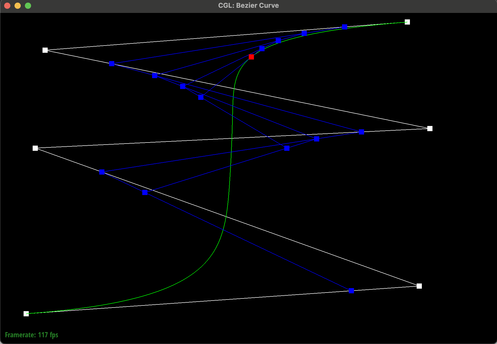
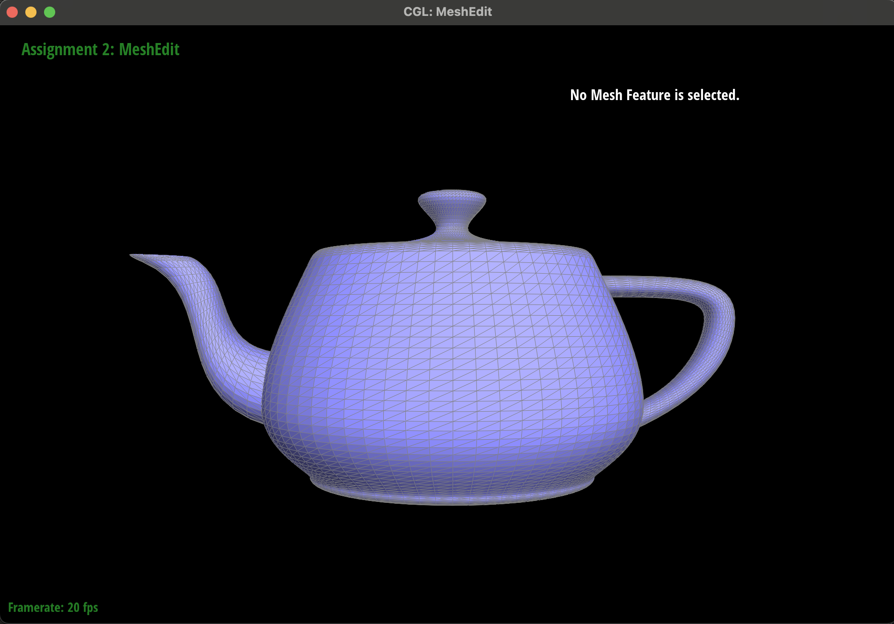
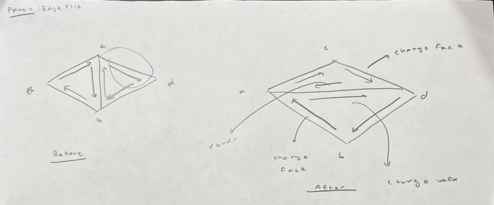

Overview
This assignment was split into two main sections. The first dealt with Bezier Curves and Surfaces whereas the second dealt with Triangle Meshes as well as manipulating them through the Half-Edge data structure.
In the first section we implemented the ability to evaluate a bezier curve based on an arbitrary number of control points. This was mainly done through the use of the De Casteljau subdivision algorithm, which defines a recursive function, consisting of multiple linear interpolations between every consecutive control point to determine the next set of control points. This recursive process is continued until we evaluate to just a singular point, which determines the actual point on the curve. As we change the ‘t’ parameter, we tend to plot different final endpoints. Varying this t parameter from 0 to 1 plots the entire bezier curve.
In the second part, we extended our functional curve creation algorithm to implement functionality of being able to graph bezier surfaces specified by a 2d array or grid of control points. Our implementation was simplified by the fact that the input grid happened to be square. The way that bezier surface evaluation worked is that the control points along the row of the grid helped evaluate a curve along each row. Particularly at the parameter of ‘u.’ Next this set of points acted as control points for a curve on the vertical axis evaluated specifically at the parameter v. In this manner we formed a systematic way of evaluating the curve on the 2d grid. One thing that was helpful is that we could use our curve evaluation subroutine defined earlier to implement the subparts of this surface evaluation method, helping simplify the logic.
Next, we moved to the meshes and half-edge manipulation part of the project. The first thing we worked on was implementing logic to assign normals to vertices in our mesh. The assigned normal vector to each vertex was a weighted average of the normal vector of all the surrounding faces to the vertex, where the weight was the area of the face. The motivation for having this assignment was because having normal vectors help with important calculations such as shading when rendering surfaces. The main challenge was first getting used to the Half-Edge data structure, where given the halfedge for the current vertex, we need to iterate through all the other faces that surround that vertex. This was done through just some careful pointer manipulation of the half-edge iterator. Through this iteration we were also able to access the face pointer for each of the surrounding faces and then we utilized the normal method to get the norm of that face. The other thing we had to do was find the area of the face, which was done through a simple cross product norm (and dividing by 2) of the 2 edges that surrounded the face. Now we could simply multiply the normal by the area which we derived. Normalizing this weighted sum gave us our final answer which we were interested in returning.
The next task had us implement a common half-edge manipulation called the edge flip. In the edge flip we basically flip the orientation of the common edge between two triangles. This creates two new looking triangles, however no new instances of edges, faces, vertices, or half-edges are introduced in this case. To implement this edge-flip the main challenge was just deducing the set of pointers and values they point to for each structure involved in the edge flip. This was done by first explicitly listing out all the structures and then manually working through the state of the pointers and structures post edge flip. Then once that was worked out, it was simply a task of setting those structs to the corresponding new values as stated in the advice instead of just changing structures that underwent some sort of change.
Edge-split was the other half-edge manipulation that we had to implement. Arguably, this was a bit more involved than the edge-flip since new structures, notably one new vertex, two new faces, three new edges, and 6 new half edges had to be introduced in addition to the fact that some of the old structures now had different pointers due to the fact that we were introducing new triangles and other components as a result of the split. However, due to the practice of pointer manipulation and explicit declaration of all the old structures, much of the work was pretty similar. Specifically we declared a variable for all the old structures and similarly declared the variables for all the new introduced structures; worked out the pointer assignments in the new state after the split manually; then we finally redundantly assigned the new pointers to all the aforementioned variables. Once again like the spec suggested, doing the redundant assignment helped reduce the pains potentially faced with debugging mistakes related to some missing assignments if we only chose to reassign modified pointers or values.
In the last part of the project, we implemented mesh upsampling. Specifically, this allowed us to make use of the edge-flip and edge-split functionality that we spent so much time trying to implement thus far in the project. The mechanics of the algorithm to implement mesh upsampling were pretty finely detailed in the spec so it was just a matter of correctly translating those steps into code. Specifically the complexity of trying to upsample lies in two factors: introducing new structures as well as changing the positions of our old structures. However, some of the properties of the new structures depend on the positions and properties of the old ones, which made it important to be careful in the order that changes were made. Specifically, each of the structures had a field that stored the old and new positions as well as a boolean flag which labeled whether or not the structure itself was new or not. Then we computed the new positions of the old vertex (storing into the old vertices’ field) as well as the position of new vertices (which would go inside the edge that would be split to achieve that new vertex). Next we would split every edge and once we split the edge, propagate over the position of the new vertex from the value that was stored inside the edge structure previously. Then we flipped edges that connected one new vertex with another old one (also done through using flags). Finally we have the mesh ready and just need to make the actual position field for all the vertices the one that is stored in their corresponding newPosition field, completing our upsampling.
Part 1: Bezier Curves with 1D de Casteljau Subdivision
Basically De Casteljau’s algorithm is a recursive subdivision algorithm that given a list of n control points and a parameter ‘t,’ basically indicates the location along the eventual Bezier Curve we are evaluating by producing n - 1 of the next control points in one step. Recursively applying this step as indicated in the algorithm until we have just 1 point essentially gives us the point that is actually located on the Bezier Curve that we are trying to graph for the specific parameter ‘t.’ To produce n - 1 control points from n control points, we basically linearly interpolate between each two consecutive control points, with ‘t’ acting like our interpolation parameter.
Showing the evaluation of the bezier curve at each recursive subdivision step. Iteration 5 evaluates the exact point on the curve.
The evaluated bezier curve as well as the point of a curve parametrized by slightly different positioned control points as well as a different value of t.
Part 2: Bezier Curves with Seperable 1D de Casteljau
The nice part about needing to implement Bezier surfaces in this assignment is that we can apply the De Casteljau’s algorithm that we implemented in the earlier part, which evaluates a curve as a subroutine to evaluate points on a surface. As mentioned in the overview section, basically when trying to evaluate points on a surface, we are first defining the bezier surface by a 2d array or grid of control points. In our implementation we were given that this grid was a square. Now, first along the control points in each row helps evaluate a bezier curve along that particular row. Specifically, at the parameter ‘u.’ Now we have n (where n is the size of the side of the control points) evaluated bezier curve points since we applied the De Casteljau algorithm from part 1 on each row of our grid. This new set of n evaluated points function as our control points along the vertical axis and the evaluated point we are worried about is specified by the parameter ‘v.’ So in summary we run n bezier curve evaluations along the row, which gives us n points in one column, which we then plug into as control points in another bezier curve evaluation specified by the parameter v. This two step process then gives us one specific point, parametrized by (u,v). Shifting u and v across their domain then helps plot out the entire surface that our initial control point has defined. In code, this translated over pretty similarly. We defined a function evaluate that would make subsequent calls on the correct rows and later the one column to evaluate1D, with a parameter, which would output the specific point by calling evaluateStep as a subroutine until it only had one point.
The evaluated bezier surface which generates this teapot.
Part 3: Area-Weighted Vertex Normals
The main challenge with implementing the assignment of vertex normals to be the area-weighted normal vector of all the vertex’s neighboring faces was getting used to the half-edge data structure and coming up with a way to traverse and change pointers in a manner that would lead us to iterating over all of the neighboring faces of a particular vertex. The pattern of traversal that was deduced was start at the current half-edge of the instance vertex that is calling the function. Each half edge is associated with a face so we can query for that. If the face is a boundary face then it is a “virtual face” and we should not have that in our area calculations. If not, we need to update our running weighted sum. We describe the methodology to calculate the weights in a bit. After the weight calculation and sum update is done, pointers are changed in the following manner: we access the twin halfedge (so the halfedge that points into our vertex) and then access the next half edge of the twin in this way in our next iteration inside our loop logic, the face will be the neighboring face and our logic can continue. Due to the structure of the manifolds we are guaranteed to return back to our starting halfedge, which is our ending point of the loop. Once the loop ends, we simply return a normalized version of our running weighted normal vector sum, giving the weighted-normal of the target vertex.
Now we describe how to find the weight (which is the area of the triangular face). We know through vector algebra the norm of the cross product of two vectors gives the area of the parallelogram that is formed by those two vectors. Halving that value gives the area of the triangle specified by the two vectors (since two vectors and an angle can form a triangle [recall side angle side congruence]). To find these vectors we need 3 points, one being the vertex and the other 2 being the neighboring ones to form the vector-ray. These neighbors can be found by accessing the current half-edge’s next half-edge and querying for the vertex that it roots and also the current half-edge’s next-next vertex. With these 3 points, we just find the vector from vertex -> point 1 and vertex -> point 2, find the norm of the cross product and divide by 2 to get the area. Then we query for the actual norm of the face by simply using the member function of the Face class and multiply it by the calculated average and add it to our running sum. The final sum clearly is the weighted sum of all the neighboring face-norms, which can be used to find the final answer as indicated in the previous paragraph.
Comparison of two different shading mechanisms used to compute shading on the teapot. Flat shading makes use of face normals. Phong Shading, which makes use of vertex normals, which we built the machinery to calculate in this part, results in a much more smooth surface visual.
Part 4: Edge Flip
The spec provided some really helpful tips that made the implementation of the edge flip more painless. Specifically, stating that we should just reassign all of the pointers for all of structures involved (namely vertices, edges, half-edges, and faces) probably saved a lot of time compared to if we proceeded with the alternative option of trying to find our which structures had a change in pointers and only attempting to modify those. Similarly this advice motivated the idea of first assigning all the involved structures into a variable first and then mechanically reassigning the pointers and swapping things as deemed necessary.
In terms of the actual mechanics of implementing the edge flip one important thing to notice is that no new structures are created to implement this functionality. Therefore, we just need to reassign existing ones. So once we listed out all the structures (vertices a, b, c, d; half-edges ac, cd, db, ba, cb, bc; edges ac, cd, db, ba; faces 1 and 2) on paper we drew out the post-flip state of our 2-triangle geometry and reassigned the appropriate changes. For instance the face of half-edge cd was changed to correspond to the face 1 instead of it being in face 2 as it was previously. Some other half edges also had changes to their next value, specifically the ones on the edge that was flipped. Because of these multiple changes, we just used the post-condition to completely reassign all the values of the pointers. Other structures that we had to modify were the face and vertex pointers. Here the modification was just to make sure that the half-edge they point to actually still corresponds to a half-edge that represents the face or vertex because those could be changed and we could have wrong pointers. The code provides a list of the exact changes but this was the gist of the main challenges of the problem.


Pictures showing the functional edge-flip mechanism.
Initially while implementing this functionality, I thought for some reason I could reasonably visualize all the pointer changes mentally and proceeded to write the code. Perhaps predictably one could imagine this did not bode well. Then—like I should have done earlier—I pulled out a pencil and paper, drew up the toy example and labeled the key structures both before and after the flip. This made life much easier as the work of the before and after stage was already on paper and I just had to carefully replicate it in code now. Attached for no real purpose is the pen-paper masterpiece.
Although the pictures are not too detailed, having a reference to look to helps speed up programming as well as reduces the possibility of errors from my empirical evidence.
Task 5: Pixel Sampling for Texture Mapping
Previously colors were being assigned to the points we were trying to rasterize using barycentric interpolation and attaching color values to the specific points in our geometry. However with texture mapping each vertex in our triangle is associated with a corresponding texture coordinate. This texture coordinate represents another space that we sample from to determine the color of the particular vertex. This means that when we are tasked with rasterizing our triangle the samples we take inside the triangle will be assigned to a corresponding texture coordinate for the sample. This sampling will necessarily be in the continuous domain, however we only have texture coordinate to color mapping for lattice points in the texture coordinate space. Therefore to determine the color of the sample, we need to also sample in the texture space. The two methods of sampling that were implemented were nearest neighbor sampling, which would just return the texture color of the closest lattice texture point to the sample texture coordinate; and bilinear sampling, which would find the 4 closest lattice points and then depending on the distance from each of these point, the final color would be the weighted average of all the colors at the 4 points. In this manner we can view bilinear sampling as taking more samples of the texture space than does the simple nearest neighbor. The process of finding the corresponding texture coordinate for each sample coordinate is described further in the overview section.


Comparing bilinear vs nearest neighbor pixel sampling on various sampling rates.
Examining the photos it is pretty clear that bilinear interpolation does a better job at antialiasing compared to nearest neighbor interpolation when the sampling rate is the same. There is also more anti-aliasing when the sampling rate is higher (which is expected behavior since we increase our sampling rate) so the discrepancy between bilinear and nearest neighbor at higher sampling rate is lesser. The reason bilinear does a better job is because in bilinear we sample the closest 4 texel colors to assign the color of the pixel compared to just sampling one, which is inherently a higher sampling rate, leading to more anti-aliasing. Extending from that observation, we will notice larger differences between the two sampling methods when the frequency in the texture space is very high so when the signal changes quickly our sampled output will be less jagged than if we used nearest neighbor as there are more samples we are taking into account to determine the color at out pixel.
Task 6: Level Sampling with Mipmaps
The main issue with solely pixel sampling is the fact that as we move a singular sample inside the image space this could correspond to very different footprint movements inside of the texture space. Namely, we could have a very extreme case of aliasing if the movement across the x or y inside of the pixel space corresponded to a very large change inside of the texture space, leading to aliasing when we are trying to sample the texture space in order to set a color for the sample in our image space. This is why we introduce level sampling; we basically calculate for a given image sample, the footprint the sample has on the corresponding texture space. If the footprint is very large, then we sample for a representation of the texture that has filtered out high frequencies in order to introduce antialiasing. This basic idea led to the creation of a data structure called the mipmap. Essentially the mipmap stores all the different levels of a textured image. With each subsequent level, the image of the mipmap level contains increasingly filtered versions of the original texture map (we are filtering more and more frequencies of the texture map at higher mipmap levels). Now for each screen space point we sample, we calculate the footprint on the texture map (which is the larger of distance in either the U/V direction we move when we move in X/Y). And the level which we sample at is proportional logarithmically to this distance (which makes sense since each subsequent level halves the number of pixels in each direction, implying the same proportionality). There is a possibility that the logarithm returns a number less than 0 or more than the levels in our mipmap. In that case we sanitize the output and simply query the mipmap at level 0 or the highest value respectively. With the level chosen for each pixel, the mechanism for sampling the map at each level from the previous part still applies, giving us a powerful two-phase texture sampling, leading to extremely nice rendering. Furthermore since the level returned is a continuous value, the level itself can be determined through a bilinear interpolation of the mixture of the color returned from the two closest levels to not have drastic color changes, or we can just use nearest neighbors. Clearly, implementing level sampling along with pixel sampling greatly increased the number of options available to render an image.
In the implementation of the project, we already were given the mipmap data structure. Largely the work corresponded to calculating the footprint our sample had on the texture map. This was done by moving in the x and y directions in the image space by one unit and then seeing the corresponding coordinate that would give us in the texture space. The coordinate conversions were done similarly to how they were performed in the previous step. We took the larger of the changes in coordinates in the texture space as our heuristic to calculate the level of the mipmap we would sample from. And as mentioned previously since the logarithm is a continuous function, we had a few options on how we would interpolate level sampling (nearest vs bilinear). Once those decisions were made we already had the machinery to conduct pixel sampling at the level chosen by our level sampling scheme.
In the next paragraphs I will discuss the tradeoffs of pixel sampling, level sampling, and samples per pixel.
With increasing the number of samples per pixel our memory overload increases by a factor of the sampling rate since we will need to store data for each of those super samples for every pixel. We will also need to iterate through all of those new samples, leading to an increase in time complexity by the same factor. While we get higher memory and time utilization, it does increase our anti-aliasing power since more samples per pixel effectively increases our sampling frequency and hence our nyquist frequency, allowing us to properly represent increasing frequencies.
When level sampling through a mipmap our memory utilization increases by a factor of 4/3 due to the geometric decrease in the number of texels stored at every increased level. On the other hand our speed should not change significantly. While we do have to make extra calculations such as calculating the level to index in the mipmap and the distance footprint in the texture space, these are just a few extra computations that should not have too large of an impact. We also do get the benefit of added antialiasing because depending on the variability of the footprint on the texture space we sample from the correctly anti-aliased image, giving good anti-aliasing for the overall picture.
The complexity of pixel sampling really depends on the scheme being used. However regardless of whether we use nearest neighbor or bilinear pixel sampling, the memory should not change as we are just sampling for the texture map that already exists in memory and are not incurring any additional overhead. If we decide to use bilinear vs nearest neighbor, the time to complete will be a bit longer since bilinear requires us to sample the 4 closest texels as well as compute 3 linear interpolations and nearest neighbor only 1 sample. Due to the additional amount of sampling in bilinear interpolation, we also enjoy the added benefit of more antialiasing power.


Comparing various level and point sampling combinations. Having a high complexity of both seems to smooth out edges the best, leading to higher anti-aliasing power.